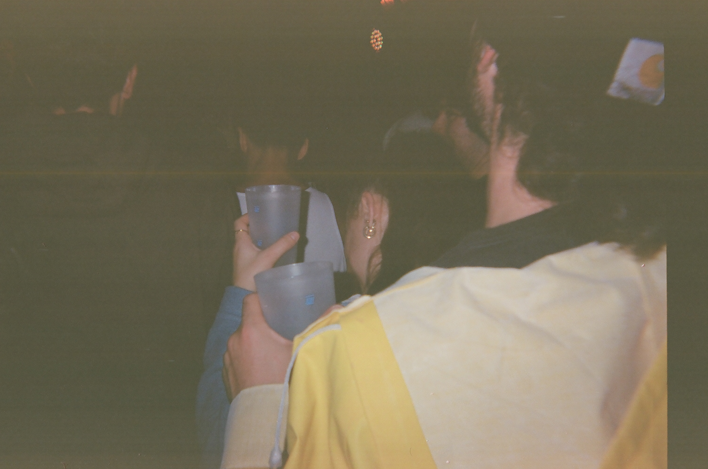
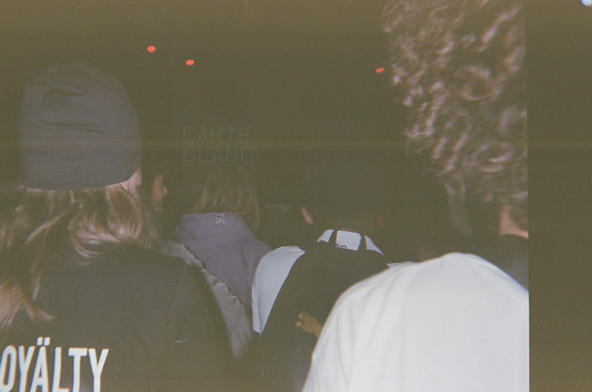
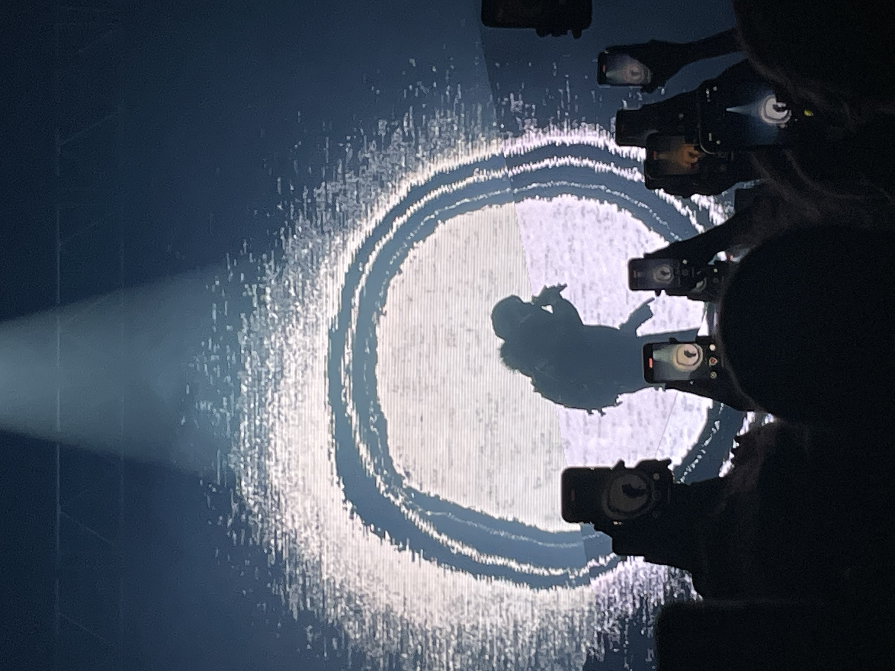
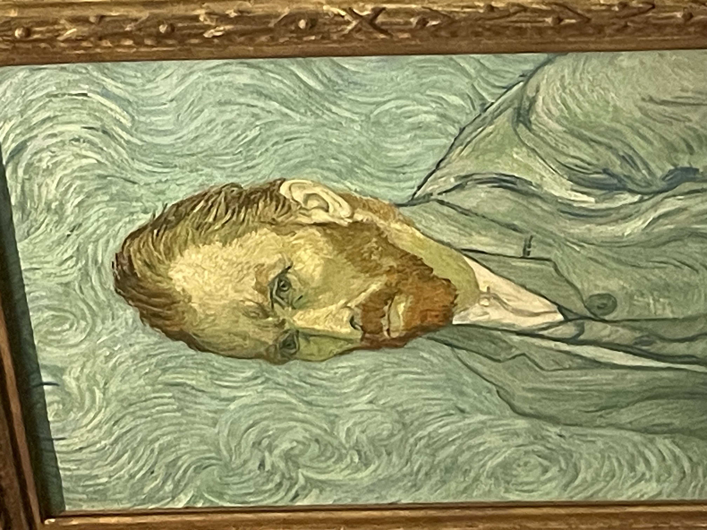
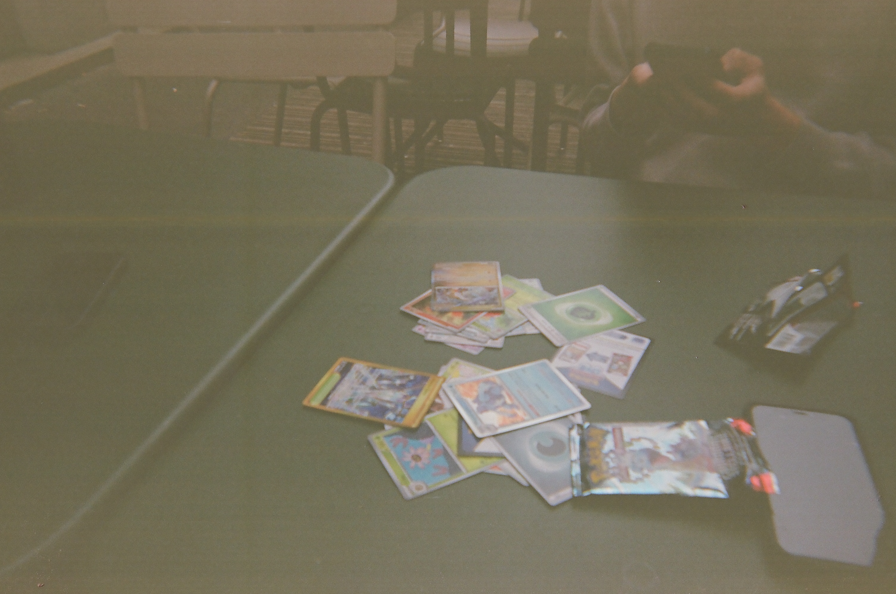
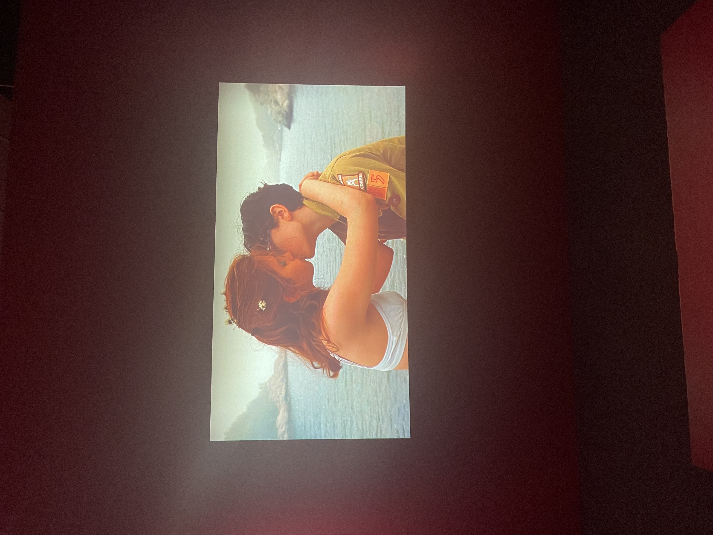

Galerie photo
Quelques images importantes à mes yeux, capturées au fil du temps.

Concert, bruit, joie.

Foule sentimentale.

Présence scénique.

En face à face.

Collectionneuse aguerrie.

Les couleurs de l'amour.
La scène locale.